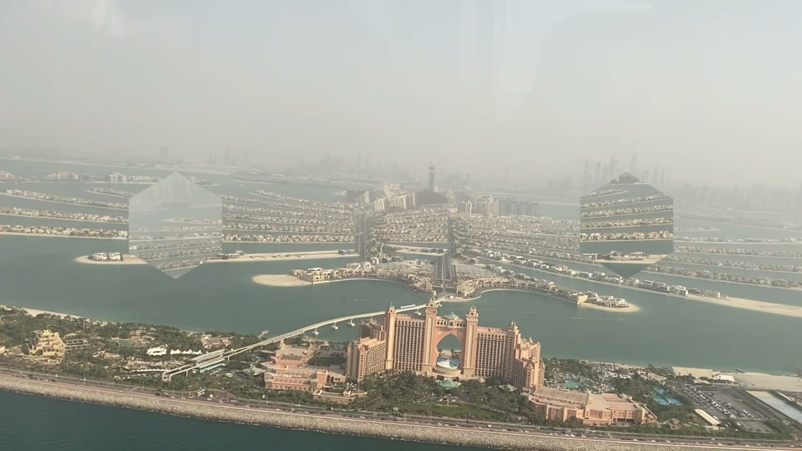
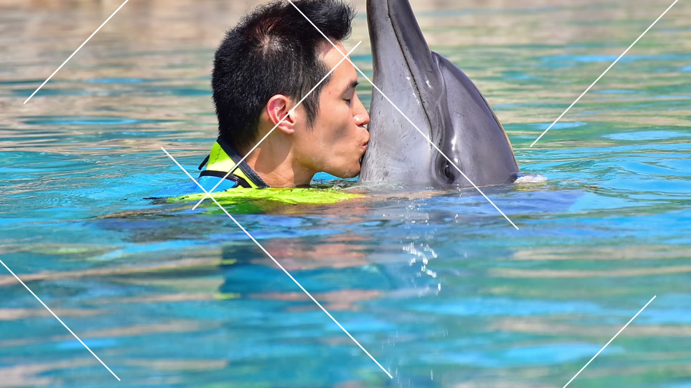
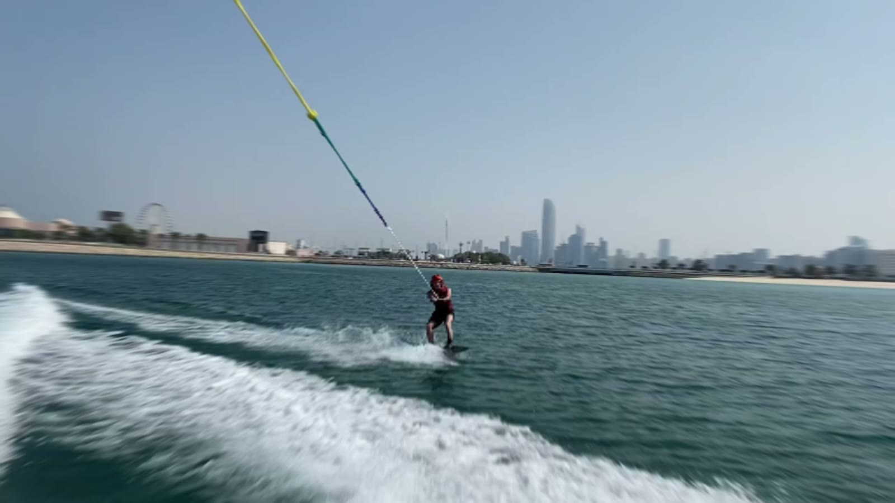
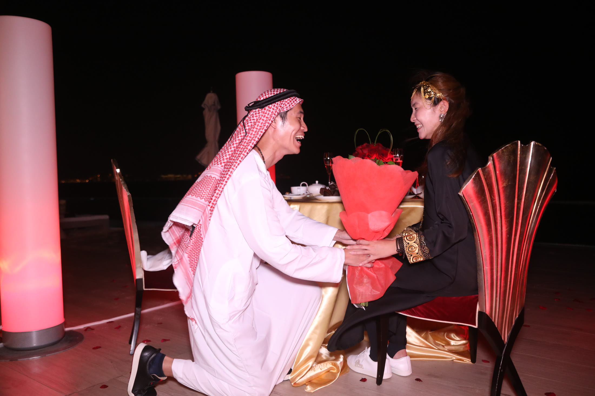
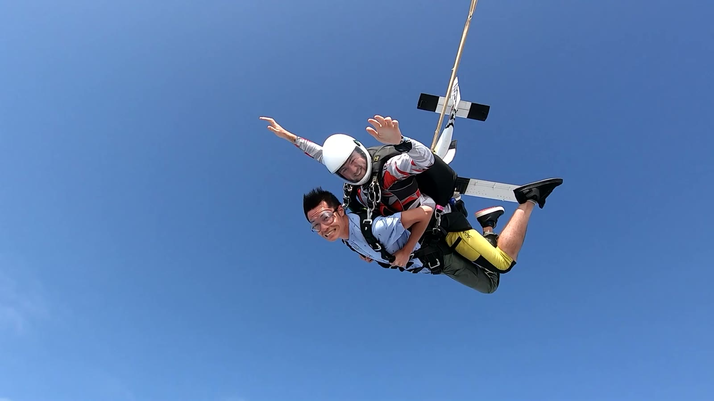

Dubai from aboveDay one · 04 Oct
A Birthday Above Dubai
Gez’s birthday was 3 October, and the celebration followed us into Dubai — from a cake at Atlantis to our first look at the city from the sky.
Open this chapter4 — 11 October 2019
A journey through Dubai, remembered by Gez & Hetty — from our first flight above the city to the night everything changed.
Our story
Some memories arrive loudly. Others wait quietly in the space between. Together, these eight October days became the beginning of our forever.

Dubai from aboveDay one · 04 Oct
Gez’s birthday was 3 October, and the celebration followed us into Dubai — from a cake at Atlantis to our first look at the city from the sky.
Open this chapter
A playful morningDay two · 05 Oct
A morning of blue water and pure delight — the kind of laughter that needs no explanation and stays vivid years later.
Open this chapterDay three
Small discoveries, shared glances, and a page still waiting for its photographs.
Open this chapterDay four
Another page in our journey, held for the details we carried home.
Open this chapterDay five
The story was gathering quietly, one day before the water and two before the question.
Open this chapter
One last rushDay six · 09 Oct
Speed, spray, and a horizon wide open. One more adventure before the night Gez had been carrying in his heart.
Open this chapter
The question · The answerDay seven · 10 Oct · 10:34 pm
Poolside at the Burj Al Arab, beneath the Dubai night, Gez asked Hetty to share forever. The journey became a promise.
Relive the moment
A leap togetherDay eight · 11 Oct
The morning after the promise, we stepped into the sky — two separate jumps, one shared leap into everything ahead.
Open this chapter